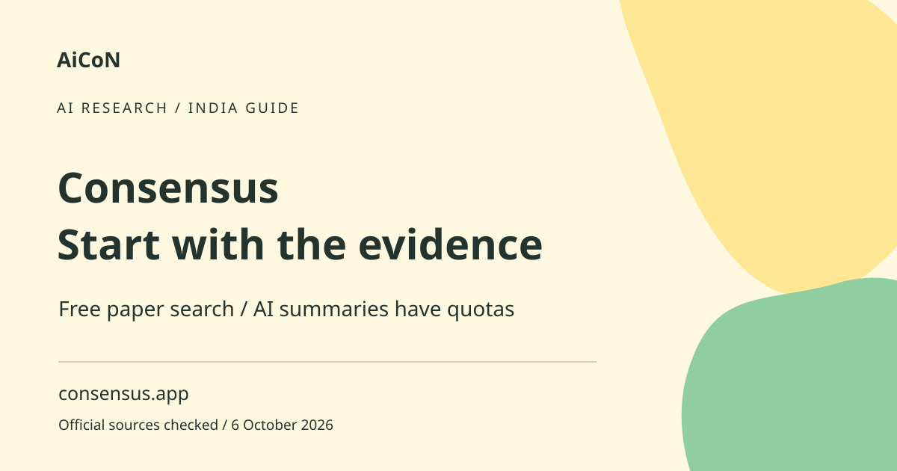

Consensus: AI paper search, free limits and checks
Consensus searches research papers and offers AI-assisted summaries. It can help you find studies faster, but a summary does not establish that a claim is true. Read the original paper before relying on findings that affect health, money or important work.

What is Consensus?
It is a research-search tool that surfaces published studies and offers different levels of AI assistance. A paper search helps discover sources. A Study Snapshot highlights details such as study design and sample size. A Deep review is a more involved AI synthesis. These are useful reading aids, not replacements for checking the evidence yourself.
Why it may help students in Kerala and India
A student can explore a research question, find starting papers and compare methods before writing a literature review. A literature review explains what prior studies say and where gaps remain. Search in precise terms and use regional context when relevant. Findings from another country or a narrow sample may not apply directly to Kerala or all Indian populations.
How to get started, step by step
- Open consensus.app and review the free plan before signing up. Start with a question that can be answered by studies rather than a broad opinion prompt.
- Enter a clear question or topic. Separate multiple questions so you know which result supports which claim.
- Read the returned titles, dates and abstracts. An abstract is a short overview, not the full methods or findings.
- Open relevant papers through their source links. Check the authors, publication, study type and whether the paper has been corrected or retracted.
- If using an AI summary or Snapshot, compare the claims with the paper. Look for the sample size, population, outcome measured and limitations.
- For a broad conclusion, compare several suitable studies. A single paper or a count of agreeing papers is not enough if their methods are weak or their subjects differ.
- Record the paper's original citation and link, not just the chatbot's wording. Use your institution's citation style.
- Before using a paid mode, check remaining quota, plan price, billing interval and any separate API/MCP allowance.
Current free allowances
The official subscription guide lists a free tier with unlimited Papers searches, 10 Pro messages, three Deep reviews, 10 Study Snapshots and 30 included API/MCP calls per month. API access is a software interface; MCP is a way to connect a tool to an AI client. Those are not the same as ordinary website searches. The separate MCP docs show plan-specific results and search limits, so check the surface you actually use.
Paid plans and India costs
Paid plans add larger or unlimited allowances for selected features, not unlimited everything. The checked Pro guide still caps Deep reviews at 15 per month. Displayed subscription prices are in foreign currency; we do not repeat a guessed fixed rupee conversion. Confirm the live INR total, taxes and annual-versus-monthly billing before paying. A paid subscription to another AI app does not automatically upgrade your Consensus account.
How to judge a study
Check whether the work is an experiment, observational study, review or another design. Ask what was actually measured and how many participants or samples were involved. A correlation means two things varied together; it does not by itself prove one caused the other. Compare effect sizes, uncertainty and limitations rather than accepting a confident sentence in a summary. For medicine or legal matters, use an appropriately qualified professional.
Access, privacy and academic integrity
Search access does not guarantee free full text for every paper. Some sources may have publisher restrictions. Use legitimate library or open-access routes, not a promise that an AI tool bypasses copyright. Avoid putting unpublished results, confidential patient data or personal records into a research question. Verify quotations and references and disclose AI assistance where your institution requires it.
Frequently asked questions
Is paper search free?
The official free plan lists unlimited Papers searches, with quotas for advanced modes.
Are full papers always free?
No. Publisher or library access conditions may still apply.
Does an AI consensus prove a treatment works?
No. Study quality, relevance and expert interpretation matter.
Does ChatGPT Plus upgrade Consensus?
The separate MCP docs say access depends on the Consensus plan, not your other AI subscription.
Official sources
Checked 6 October 2026. Expanded from an AiCoN short post delivered 6 October 2026. Portal screens and rules can change.